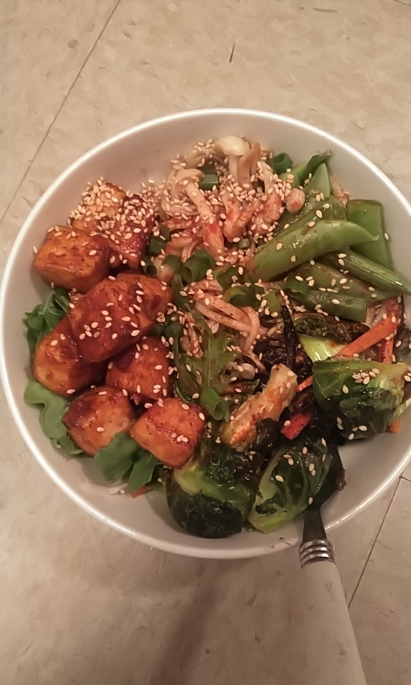

korb wuz here
Bhudda Bowls
These bhudda bowls are healthy and can easily be adapted to include meat or fish for the carnivores. Easy, beautiful, delicious!

Ingredients:
- 2 large carrots
- 3 green onions
- 1 package extra firm tofu
- Soy sauce to taste
- Oyster sauce to taste
- Baby bok choy
- Purple cabbage
- Any other vegetables - your choice!
- 2 cups white rice or brown rice noodles
- 1.5 tbsp grated ginger
- 2 cloves grated garlic
What do?
- Cook rice or noodles according to package instructions
- Refrigerate or cool on counter until chilled all the way through
- Meanwhile, dice tofu into cubes and toss it in 1.5 tbsp oyster sauce and 1 tbsp soy sauce. Coat the mixture in flour and bake at 450 for 25-35 mins or until crisp
- Cut carrots into sticks, and chop green onions, bok choy, and purple cabbage. If adding other vegetables, dice as desired.
- Grate garlic and ginger and mix with soy sauce and oyster sauce to taste. This will be poured over the bhudda bowl.
- Add chilled rice or noodles to bowl, top with crispy tofu and vegetables. Arrange as prettily as you desire
- Add sauce, top it off with some roasted sesame seeds for extra crunch, and dig in!